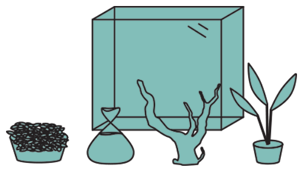
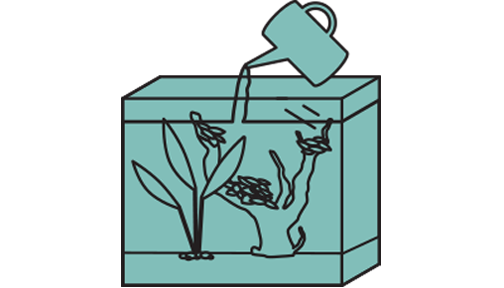
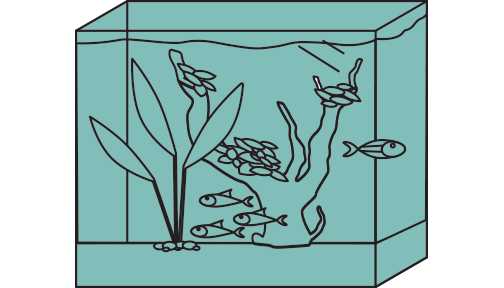
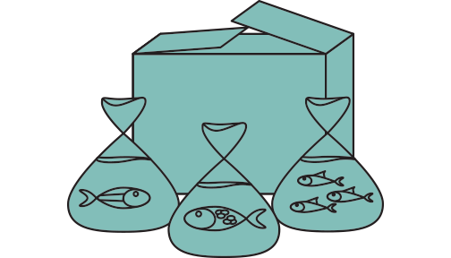
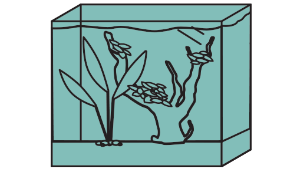

-
How it all works
-

We send you all the supplies you need to get your tank up and running
-

Using our details instructions to set up the tank.
-

Fill the tank with water.
-

Allow the tank to cycle for 2 weeks before we send your fish.
-

After your tank has cycled for 2 weeks we send your fish to finish of your beautiful new aquarium.
-

Enjoy your goregous new aquascaped aquarium.